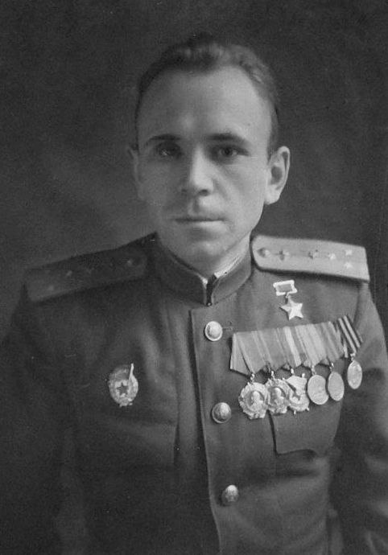

Борис Иванович КовзанЛегендарный летчик-истребитель |
|||||||
Разделы:
|
Добро пожаловать на сайт о Борисе Ковзане! Борис Иванович Ковзан (1922-1985) – выдающийся советский летчик-истребитель, Герой Советского Союза. [3] Он вошел в историю авиации как единственный в мире пилот, совершивший четыре подтвержденных воздушных тарана и оставшийся в живых. [1, 2] Его мужество, мастерство и невероятная воля к жизни служат примером для многих поколений. Во время Великой Отечественной войны Борис Ковзан совершил 360 боевых вылетов, провел 127 воздушных боев и сбил 28 самолетов противника. [1, 2] Этот сайт посвящен его жизни, героическим подвигам и памяти, которую он оставил после себя. Изучите разделы сайта, чтобы узнать больше:
Четырежды он смотрел смерти в лицо в огненном небе войны, и четырежды выходил победителем, демонстрируя несгибаемый дух и высочайшее летное мастерство. |
||||||
|
Сайт-биография Бориса Ковзана. Создан в 2024 году. |
|||||||